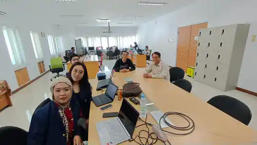
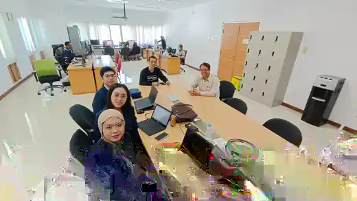

Visitasi akademik sekaligus ruang identifikasi kebutuhan data kesehatan
Kunjungan dan visitasi dilakukan untuk memantau, mengevaluasi, dan mendiskusikan perkembangan kegiatan magang serta progres penelitian mahasiswa S1 Statistika dan mahasiswa Fast Track S2 Statistika Terapan FMIPA Universitas Padjadjaran yang melaksanakan kegiatan di Dinas Kesehatan Provinsi Jawa Barat.
Selain mendiskusikan pelaksanaan magang mahasiswa, pertemuan ini menjadi sarana awal untuk mengidentifikasi peluang kegiatan penelitian, pendidikan, magang, dan pengabdian kepada masyarakat. Potensi kolaborasi dapat melibatkan Program Studi S1 Statistika, Program Studi S1 Ilmu Aktuaria, dan Program Studi S2 Statistika Terapan.
3mahasiswa
1pembimbing lapangan
3program studi berpotensi terlibat
2026/2027semester ganjil
Identitas Kegiatan
Informasi Pelaksanaan
Nama kegiatan: Kunjungan dan Visitasi Mahasiswa Magang S1 Statistika dan Mahasiswa Fast Track S2 Statistika Terapan FMIPA Universitas Padjadjaran
Hari/tanggal: Jumat, 24 Juli 2026 Tempat: Kantor Dinas Kesehatan Provinsi Jawa Barat Periode dokumentasi: Semester Ganjil 2026/2027
Tujuan
Tujuan Kegiatan
Memantau perkembangan pelaksanaan magang mahasiswa.
Mengevaluasi progres penelitian atau analisis data yang sedang dilakukan.
Mengidentifikasi kendala akademik dan teknis selama kegiatan magang.
Memperoleh masukan dari pembimbing lapangan.
Menjajaki potensi kegiatan bersama dalam penelitian, pendidikan, magang, dan pengabdian kepada masyarakat.
Peserta dan Pihak yang Terlibat
Mahasiswa dan pembimbing lapangan
No.
Nama
NPM
Keterangan
1
Peter Taniwan
140610230079
Mahasiswa peserta kegiatan
2
Gusti Ayu Anisa Eldina
140610230042
Mahasiswa peserta kegiatan
3
Sefia Herlina
140610230003
Mahasiswa peserta kegiatan
4
Uus Usuludin, A.Md.
—
Pembimbing lapangan
Uraian Pelaksanaan
Diskusi perkembangan magang dan penelitian mahasiswa
Kegiatan diawali dengan pertemuan bersama mahasiswa dan pembimbing lapangan. Setiap mahasiswa menyampaikan perkembangan kegiatan magang, pekerjaan yang telah dilakukan, dan progres penelitian atau analisis data yang sedang dikembangkan. Diskusi juga membahas kendala yang dihadapi selama pelaksanaan kegiatan, baik yang berkaitan dengan pemahaman substansi data kesehatan, proses pengolahan data, kebutuhan validasi, maupun penyusunan keluaran akademik.
Pembimbing lapangan memberikan masukan mengenai keterlibatan mahasiswa, penyesuaian kegiatan dengan kebutuhan unit kerja, serta pentingnya komunikasi dan koordinasi selama proses magang. Visitasi ini juga digunakan untuk memastikan bahwa kegiatan mahasiswa tetap memiliki keterkaitan dengan capaian pembelajaran serta dapat memberikan pengalaman dalam menghadapi persoalan data nyata di lingkungan institusi kesehatan.
Catatan: Kegiatan ini mendokumentasikan proses pemantauan dan penjajakan. Belum terdapat pernyataan bahwa kerja sama kelembagaan telah disepakati secara resmi.
Pokok Hasil Diskusi
Isu akademik, analitik, dan peluang pengembangan
Visitasi mahasiswa
Perkembangan kegiatan magang masing-masing mahasiswa.
Progres penelitian atau analisis data yang sedang dilakukan.
Kendala teknis dan akademik selama kegiatan.
Masukan pembimbing lapangan terhadap pelaksanaan magang.
Kebutuhan koordinasi dan penyelarasan keluaran kegiatan mahasiswa.
Kebutuhan pengelolaan data
Potensi pemanfaatan data kesehatan untuk pemantauan dan evaluasi program.
Kebutuhan pengolahan data menggunakan statistika, sains data, dan kecerdasan buatan.
Peluang pengembangan dashboard interaktif untuk indikator kesehatan.
Kebutuhan memperhatikan kerahasiaan, keamanan, etika, dan tata kelola data.
Potensi Metode dan Produk Analitik
Penerapan statistika dan sains data untuk mendukung kebijakan kesehatan
Berdasarkan arah diskusi, terdapat berbagai persoalan pengelolaan data kesehatan yang berpotensi dikembangkan melalui kegiatan bersama. Bentuk analisis perlu disesuaikan dengan pertanyaan kebijakan, kualitas data, unit analisis, periode pengamatan, dan ketentuan penggunaan data.
Bidang analitik
Potensi pemanfaatan
Analisis spasial
Mengidentifikasi variasi geografis indikator kesehatan dan pola keterkaitan antarwilayah.
Analisis spasiotemporal
Mempelajari perubahan indikator kesehatan menurut lokasi dan waktu.
Peramalan
Mendukung penyusunan proyeksi indikator atau kebutuhan layanan berdasarkan data historis.
Pemodelan risiko
Mengidentifikasi faktor yang berkaitan dengan peningkatan risiko pada kelompok atau wilayah tertentu.
Evaluasi program
Mendukung penilaian capaian, efektivitas, dan perubahan indikator sebelum dan sesudah intervensi.
Dashboard interaktif
Menyajikan ringkasan indikator, visualisasi, dan hasil analisis untuk mendukung pemantauan dan komunikasi kebijakan.
Kecerdasan buatan
Berpotensi digunakan untuk klasifikasi, deteksi pola, otomasi ringkasan, atau dukungan analitik dengan validasi dan pengawasan yang memadai.
Hasil Visitasi
Catatan terhadap pelaksanaan magang
Secara umum, visitasi memberikan ruang bagi mahasiswa untuk melaporkan kemajuan, memperoleh umpan balik, dan mengklarifikasi kebutuhan pekerjaan yang sedang dilakukan. Kegiatan magang berpotensi memperkuat kemampuan mahasiswa dalam memahami konteks data kesehatan, menyesuaikan metode analisis dengan kebutuhan institusi, serta mengomunikasikan hasil secara lebih terstruktur.
Perkembangan setiap mahasiswa tetap perlu dipantau melalui komunikasi berkala antara mahasiswa, pembimbing lapangan, dan pembimbing akademik sesuai kebutuhan.
Potensi Kolaborasi
Ruang kerja sama yang dapat dikembangkan
Penelitian bersama dan penelitian mahasiswa.
Magang, tugas akhir, dan tesis berbasis kebutuhan data kesehatan.
Pengembangan prototipe aplikasi atau dashboard analitik.
Seminar, pelatihan, dan pendampingan analisis data.
Program pengabdian kepada masyarakat yang melibatkan dosen dan mahasiswa.
Kolaborasi lintas S1 Statistika, S1 Ilmu Aktuaria, dan S2 Statistika Terapan.
Rencana Tindak Lanjut
Langkah yang direkomendasikan
Mengidentifikasi kebutuhan prioritas Dinas Kesehatan Provinsi Jawa Barat yang dapat didukung melalui pendekatan statistika dan sains data.
Melakukan inventarisasi data yang dapat digunakan dengan memperhatikan ketentuan kerahasiaan, keamanan, etika, dan kewenangan akses.
Menentukan topik penelitian atau analisis yang realistis berdasarkan kesiapan data dan kebutuhan pengguna.
Mengembangkan prototipe dashboard atau aplikasi analitik secara bertahap dan melakukan evaluasi bersama pengguna.
Menyusun rancangan kegiatan magang dan penelitian mahasiswa untuk periode berikutnya.
Menjajaki pelaksanaan pelatihan atau pendampingan analisis data sesuai kebutuhan.
Menyusun dokumen kerja sama apabila diperlukan dan telah memperoleh persetujuan dari pihak berwenang.
Menunjuk person in charge dari masing-masing institusi untuk komunikasi dan koordinasi lanjutan.
Dokumentasi Kegiatan
Pelaksanaan kunjungan dan diskusi
Dua foto berikut merupakan dokumentasi pelaksanaan visitasi dan diskusi di Kantor Dinas Kesehatan Provinsi Jawa Barat.

Gambar 1. Diskusi mengenai perkembangan kegiatan magang dan penelitian mahasiswa bersama pembimbing lapangan di Dinas Kesehatan Provinsi Jawa Barat.

Gambar 2. Dokumentasi kunjungan dan pembahasan potensi kolaborasi antara Dinas Kesehatan Provinsi Jawa Barat dan Departemen Statistika FMIPA Universitas Padjadjaran.
Kesimpulan dan Penutup
Penguatan pembelajaran berbasis persoalan nyata
Kunjungan dan visitasi telah menjadi sarana untuk memantau perkembangan magang serta penelitian mahasiswa, menyampaikan masukan, dan mengidentifikasi kendala yang memerlukan tindak lanjut. Pertemuan juga menunjukkan adanya berbagai kebutuhan pengelolaan dan analisis data kesehatan yang berpotensi dikolaborasikan dengan Departemen Statistika FMIPA Universitas Padjadjaran.
Potensi tersebut perlu ditindaklanjuti secara bertahap melalui penetapan kebutuhan prioritas, pemeriksaan kesiapan dan tata kelola data, penentuan ruang lingkup kegiatan, serta koordinasi antarpihak. Setiap bentuk kerja sama kelembagaan tetap memerlukan proses dan persetujuan formal sesuai ketentuan yang berlaku.
Kegiatan ini dicatat sebagai bagian dari dokumentasi Program Pengabdian Semester Ganjil 2026/2027.